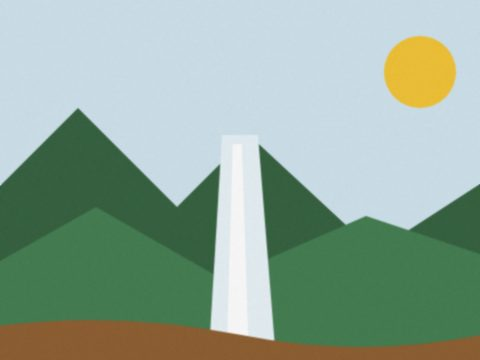
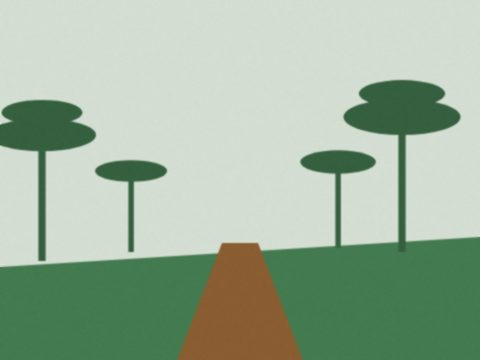
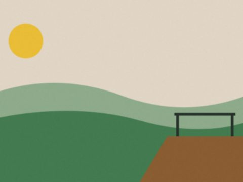

Escolha a trilha do seu fim de semana
Trilhas da região de Guarapuava, com a dificuldade, a distância e a duração de cada uma.
Trilhas em destaque


Trilhas da região de Guarapuava, com a dificuldade, a distância e a duração de cada uma.


